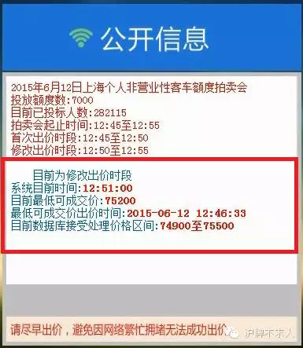

沪牌为什么这么难拍—拍牌原则篇
最早写原则篇是为了补充网拍篇里面最难解释的修改出价界面左边栏而引出的。（没有看过网拍篇的小伙伴们，关注“沪牌不求人”，点开右下菜单“拍牌流程”中的“网拍篇”即可找到）。
那我们这边也一样先来回顾一下那个看着萌萌呆呆的左边栏，下图中红框框住的主要内容。

1． 系统目前时间：告诉了你国拍行服务器的时间，以免你昨天刚从美国飞回来，建议你在第一阶段就把本机时间和系统时间调成大致一致，以后会有用途。
2． 目前最低可成交价：我们这里要第一次引出国拍行的成交原则，也就是，价高优先，同价则时间优先，那么比这个“目前最低可成交价”低的价格，此次都不能成交。
3． 最低可成交价出价时间：按照上一条里的原则，如果只有两人参加投标，额度只有一张，两个竞买人都是出了最低可成交价，那么先出价的那个人就中标了，另一个则没有。也就是说在目前情况下，出最低成交价的人，只有早过这个时间的才有机会成交。
4． 目前数据库接受处理价格区间：字面意思就是，不在这个价格区间的出价，系统当前是不会接受的。那么系统又是怎么算出来的呢？我们来想象一个简单的例子。
假设国拍行本月额度有8千张，一起来参加投标的有8万人，这里面必然只有十分之一的人能中标。为了保证公平原则，再强调一遍，成交原则是按照价高优先，同价则时间优先。
由于国拍行为了防止恶意软件频繁发送提交，规定了第二阶段的修改出价，每个投标号只有两次机会，这样不但保证了公平，也大大降低了服务器的承压能力。（插花：国拍行服务器出幺蛾子被人告的事情还历历在目 >_<|||）
然后又为了控制价格，不至于一个车牌就随随便便卖出了百万高价被人诟病，国拍行又想出了一招，叫做警示价的东东，就是在首次出价阶段你看到的那个。从警示价作为11点开始的第一个目前最低成交价，同时他限制可出价区域为目前最低成交价的上下各三百元范围内。往下三百元都是鸡肋，你不用管，只有往上三百元的区间才有用。
我们假设目前最低成交价正好是80000元，那么79700 - 80300就是现在系统允许你的出价区间。当然我们通常避开鸡肋，只看最低成交价往上300元的区间。假设当这8万个人里面有超过8千个人都出了这个区间（80000 - 80300）的价格，那么作为国拍行，势必要把价格区间往上移动100元，也就是允许别人出80400元，用成交原则来淘汰那些出80000元的人。

这个价格区间会随着时间的推移，以及大家的踊跃出价慢慢上移。基于每个人只有两次修改出价机会，所以不是来闹着玩的拍牌者都会珍惜手中的机会一直等到最后20秒才下手。道理很简单，长江后浪推前浪，前浪死在沙滩上，出价早的那些人会被他后面汹涌而来的出价更高的小伙伴们无情地踩死在沙滩上。
由于大家都不想拿着自己手中仅有的两个机会为别人做了垫脚石，所以都挤在了最后，到那时价格区间将会更快速移动，你死我活，只为杀出那条最后的血路。这个区间也会最终停止在11点半整，如果你能在最后这个区间内出价成功，那么恭喜你，你很可能就中标了。

国拍行会在拍牌后不久公布此次最低成交价。以2016年2月为例，最低成交价为83200元。如果你出价成功超过这个价，也就是83300，83400，83500，那么你肯定中标了。如果你出了83200成功，那么按照同价则时间优先的原则，国拍行还会公布一个最低成交价截至时间。这次是11:29:58第244位，也就是你出价早过29分58秒，都能中标，出价正好在58秒里的前244位也中标。
希望我啰里啰唆的这一段解释让你看明白了，国拍行的竞拍成交原则。重要的事情说第三遍：价高优先，同价则时间优先。以后别人问你为什么沪牌这么难拍到，你也可以同样对着他啰嗦上这么一大段拍牌原则先。熟悉了拍牌原则，我们下期会为大家深入分析这"难"拍的难度到底还有哪些。

如果你还没关注我们，提高逼格的方法狠简单：打开微信，扫一扫上面二维码，关注“沪牌不求人”，更多沪牌竞拍策略分析，流程科普，各类汽车相关，接地气姿势，尽在这里！
我们是一个认真把干货做有趣，坚持原创不转弯的公众号。 你，值得拥有！